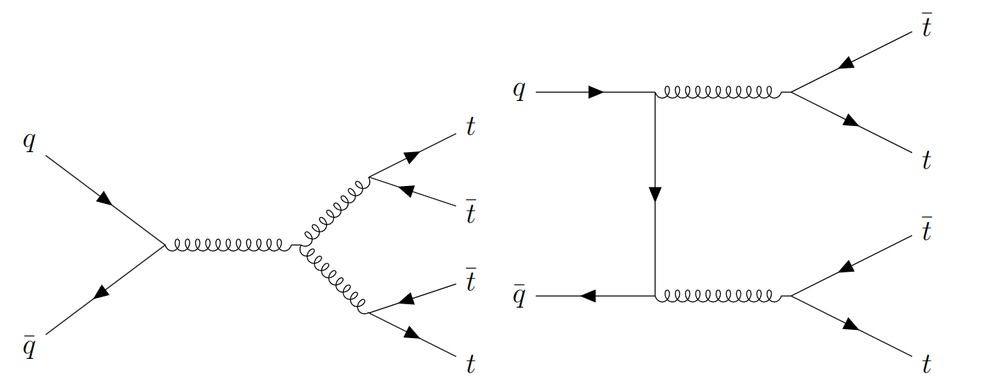
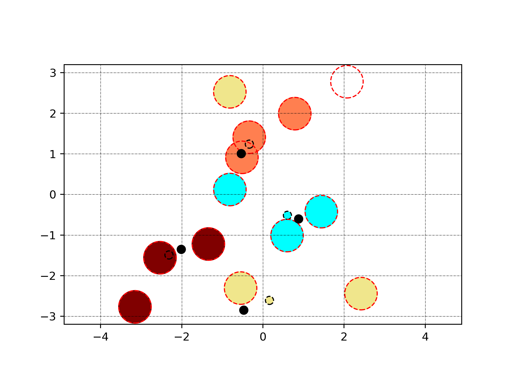
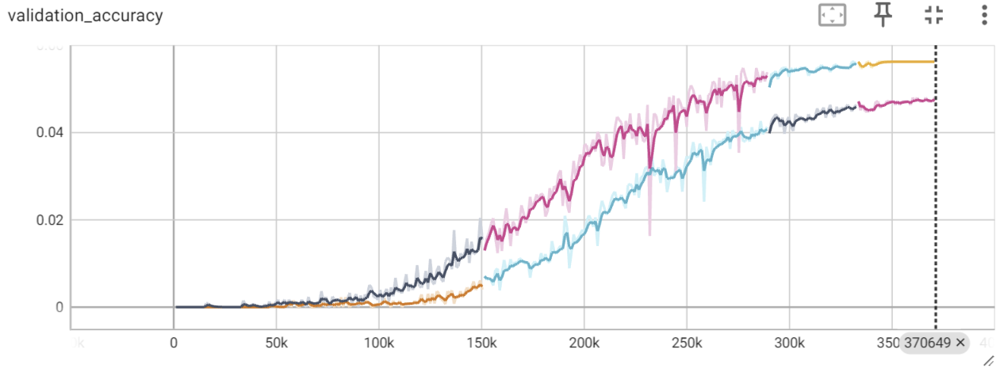
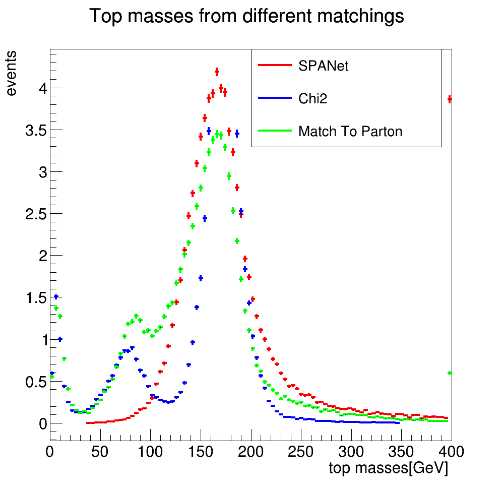
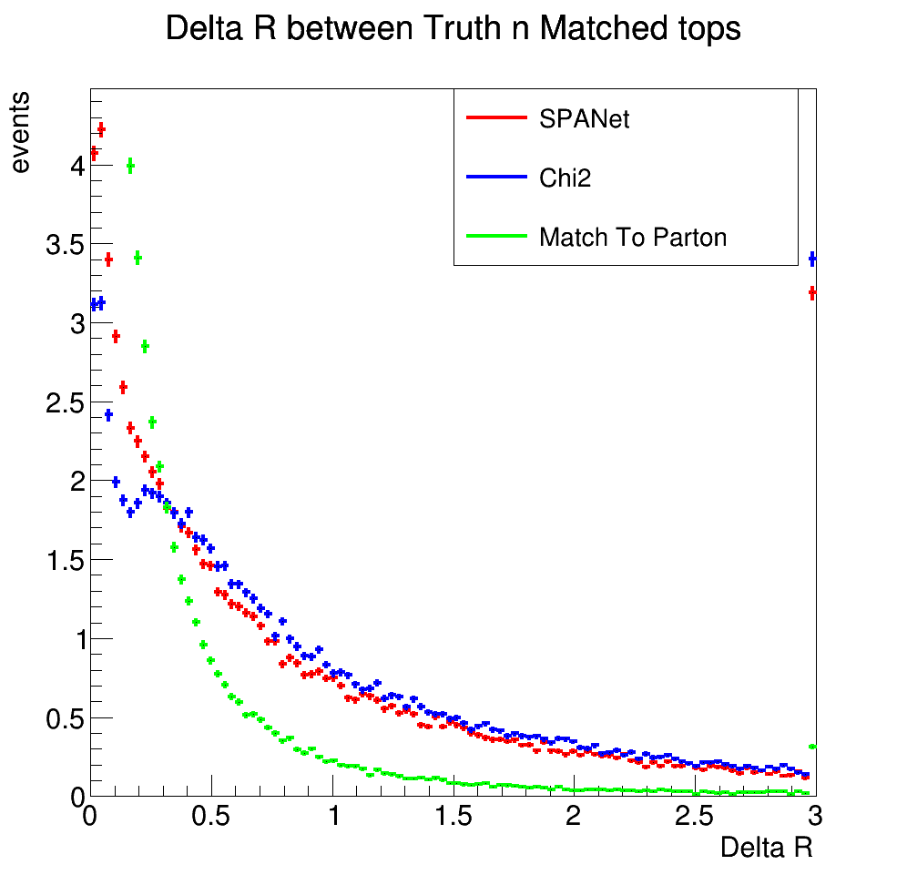
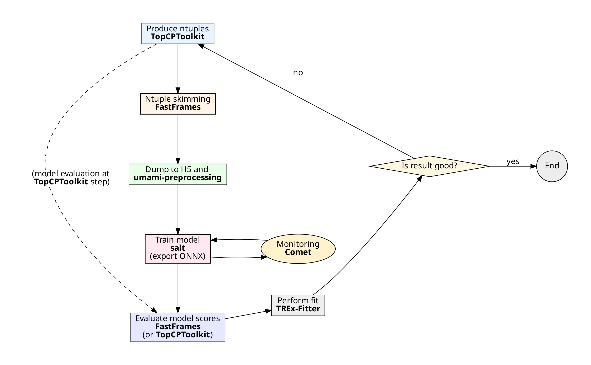
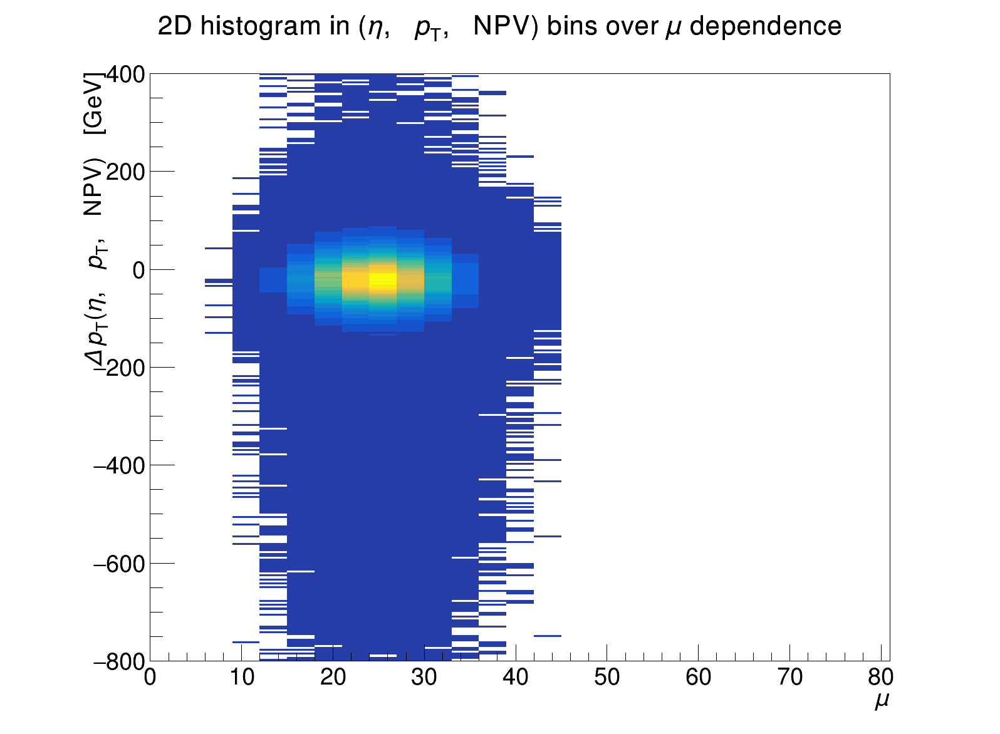

Representative Feynman diagrams of four-top-quark production at leading order.
The goal is to reconstruct the four-top-quark production in the all-hadronic decay channel, which is challenging due to the high multiplicity of jets. SPANet model is used to reconstruct the underlying event and compared to the simplified $\chi^2$ method.

Simplified view on event reconstruction.

Training SPANet model over several session - visible colored stitches. Model seems to plateau at the end of training.

Reconstructed top-quark mass.

Angular difference between true and reconstructed top-quarks.
Performance comparison between the parton level matching information, simplified $\chi^2$ method and SPANet.

Framework flow chart describing the iterative process of ML optimization.

Two-dimensional distribution of the residual jet transverse momentum $\Delta \pT = \pTreco - \pTtrue$ as a function of $\mu$.